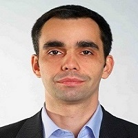

| Name: | ARTEM KOZYR |  |
|---|---|---|
| Mob. phones: | 097-525-28-02, 063-969-38-70 | |
| Е – mail: | artem_kozyr@ukr.net | |
| Place of residence (registration): | Kyiv city. | |
| Date of Birth: | January 7, 1984. | |
| Family status: | Married, no children. | |
| Career Objective: | Junior ASP.NET Developer, Junior C# Developer. | |
| Desired salary level: | From 15 000 UAH. | |
| Related Work Experience: | ||
|
from September 2017 - to this day |
engineer JOINT STOCK COMPANY "VTI" (Kyiv city, Feodory Pushynoi St, 30/32). | |
| Responsibilities: manual software testing, preparation of reports by testing results, making software documentation, participation in the development of web application projects using ASP.NET MVC technology. |
||
| Additional Work Experience: | ||
| October 2006 – October 2016. |
Work as a lawyer in the legal services of private and state enterprises (Furshet, Specialized Enterprise Holography, Polygraph Combine “Ukraine”). |
|
| Responsibilities: preparation of legal opinions, representation of enterprises in court, drafting legal documents (contracts, orders, instructions, statutory documents, etc.). |
||
| Related Education: | ||
|
September 2016 - October 2017. |
training courses «Developer Club» (https://devclub.com, Kyiv city, Verkhnii Val St, 58) by program «Boot Camp» (https://devclub.com/what/bootcamp, programming training). |
|
| Additional Education: | ||
| 2010 | Academy of Advocacy of Ukraine (master’s degree in law). | |
| 2001 - 2006 | National Academy of Internal Affairs, specialty - law, level - specialist. | |
| Languages: | Native Ukrainian and Russian, Pre-intermediate English. | |
| Skills: | IDE - Visual Studio, VCS – Git, understanding of business processes of enterprises. | |
| Personal qualities: | Conscientious attitude to work, permanent work on myself, strong team player. | |
| Additional information: | Foreign passport and driver's license (category «В») available. | |